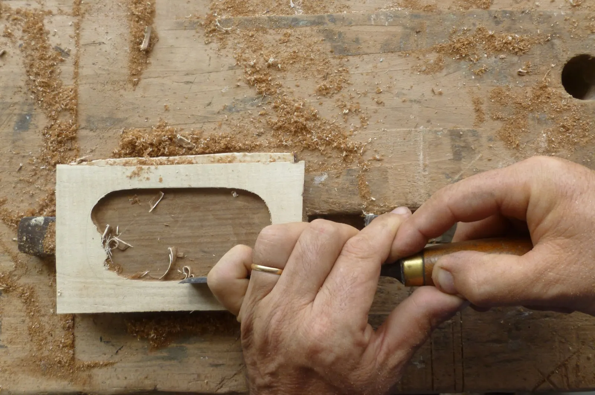
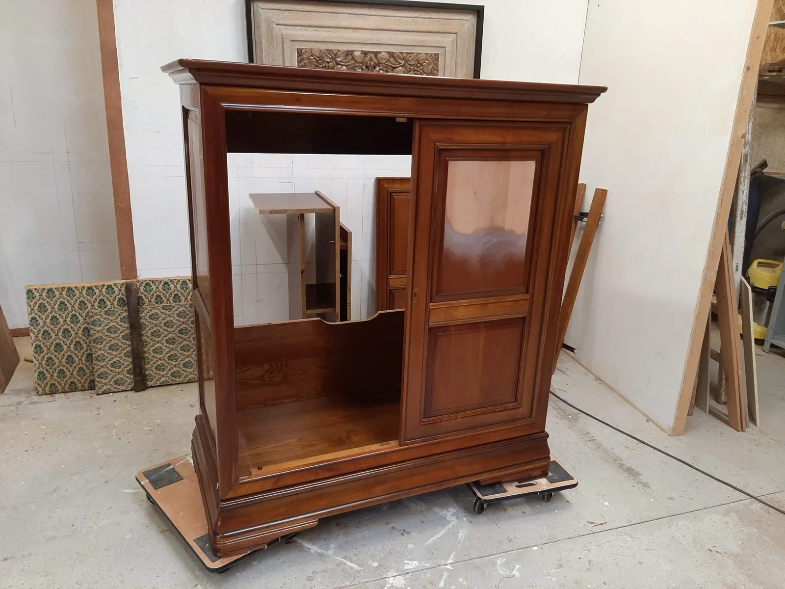
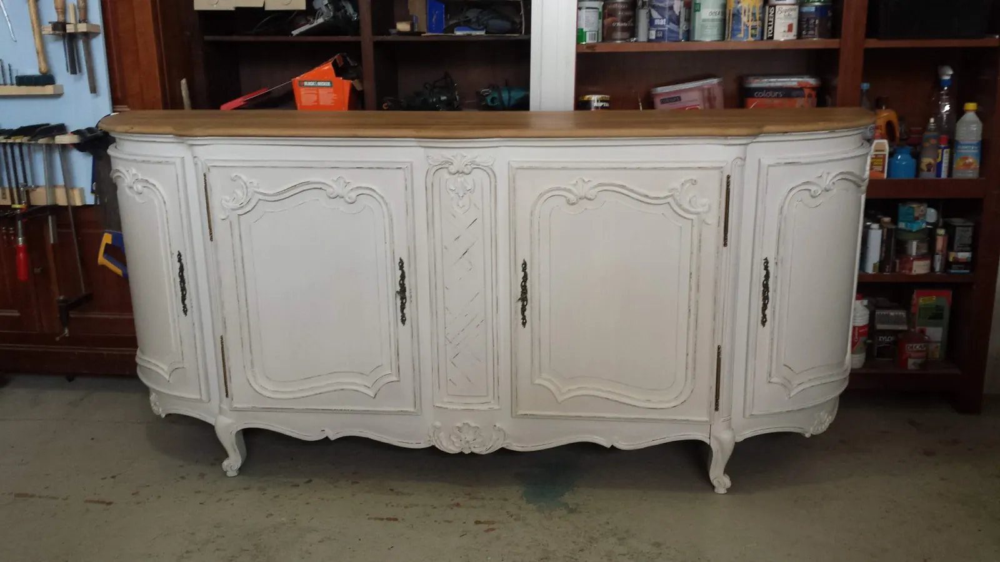
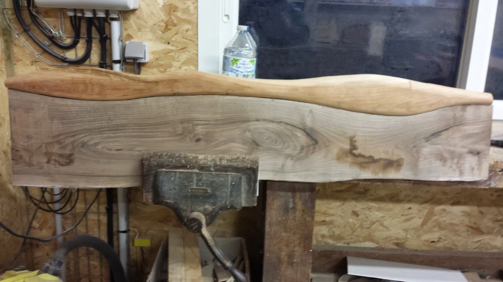
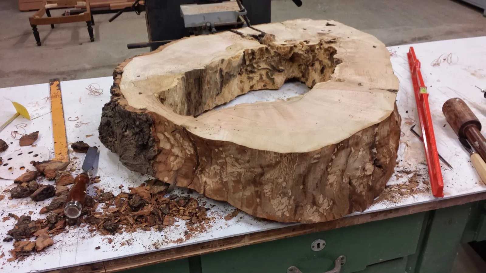
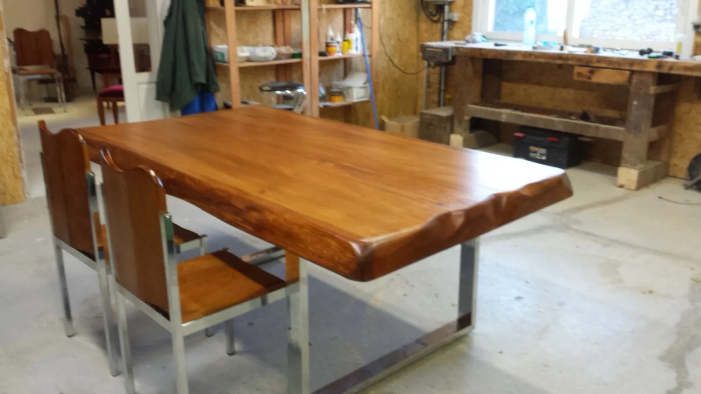
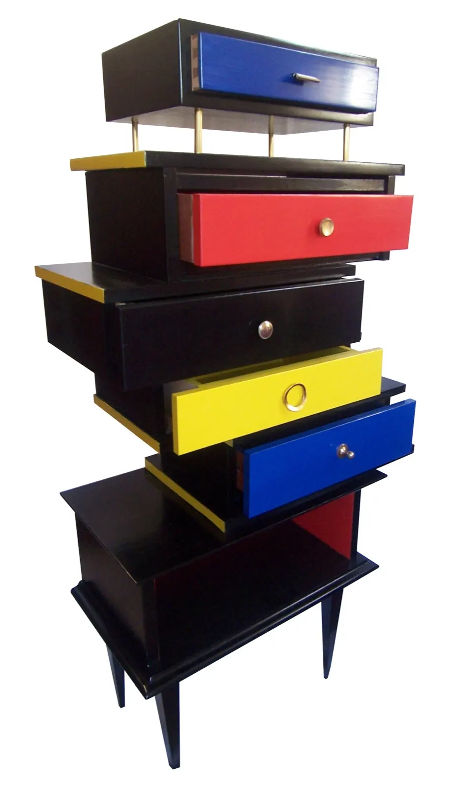
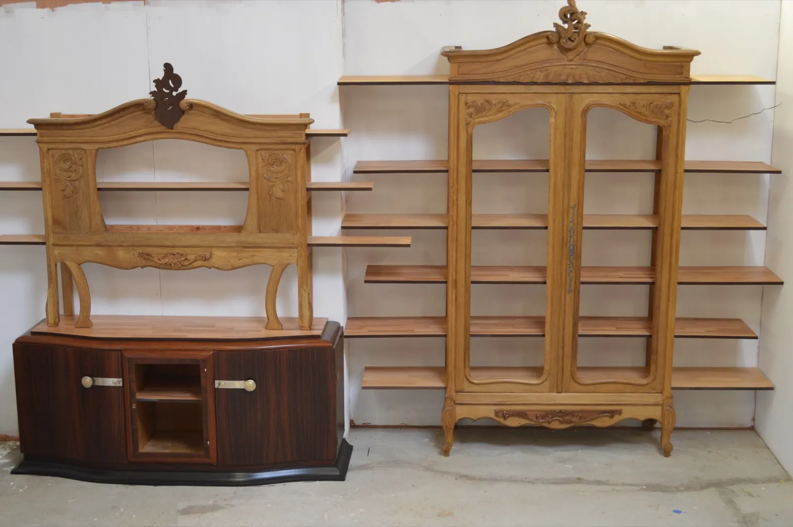

Ébénisterie et restauration de meubles, à Briollay
Noyer, chêne, amarante, bois de rose.

Issu d'une famille d'ébénistes, Thierry Menuau fabrique et restaure dans son atelier des pièces uniques en essences nobles ou rares. Il redonne vie aux meubles démodés et propose des stages d'initiation à l'ébénisterie.
- Briollay27 route de Soucelles
- Tradition familialeLa maison Menuau, de 1950 à 1975
- CAP et brevet de maîtriseappris dans l'entreprise familiale
- 4 à 5 personnespar stage d'initiation
- 9 h à 17 hcafé, machines et bois compris
Un métier appris en famille, des bois gardés par les générations d'avant.
Vous avez toujours voulu connaître les métiers du bois, vous aimez l'odeur de l'atelier ? Bienvenue aux Ateliers du Pâtis.
Thierry Menuau a appris l'ébénisterie dans l'entreprise familiale, où il a obtenu le CAP et le brevet de maîtrise. Il a suivi six mois de formation de formateur, dirigé une ressourcerie, puis travaillé dix ans comme artisan ébéniste.
Aujourd'hui, il fabrique dans son atelier des pièces uniques, avec des bois anciens qui proviennent des stocks des générations antérieures.
Qui sommes-nousVos meubles de famille, réparés, transformés ou relookés.
Thierry redonne vie aux meubles démodés : il les répare, les transforme, les relooke, ou en conçoit de nouveaux à partir de mobilier ancien et d'objets insolites.
- Réparation et transformationde vos meubles de famille
- Relooking à la demandepour les meubles démodés
- Conception de meublesà partir d'objets insolites ou de mobilier démodé
- Création de meublespièces uniques, fabriquées à l'atelier
- Petits travaux d'ébénisterie à façonsur vos pièces
- Prototypesen collaboration avec des designers et des artistes




Une journée d'initiation à l'ébénisterie.
Vous voulez découvrir les rudiments du métier ? Thierry vous apprend à vous servir d'une scie, d'un rabot et du ciseau à bois, dans son atelier de Briollay.
Toute la journée, vous manipulez les principaux outils et réalisez des assemblages qui vous permettront de fabriquer un objet plus tard. Vous apprenez aussi à reconnaître les essences, pour bien choisir celle que vous utiliserez chez vous.
« Les bois anciens que je travaille proviennent des stocks des générations antérieures. »
Thierry Menuau
De 1950 à 1975, la maison Menuau a conçu et réalisé du mobilier en merisier de style Louis XV.
L'histoire de la maison MenuauSorties de l'atelier.
Des tables, des coffrets, des bibliothèques nées d'anciens meubles : chaque pièce est unique.


La ligne OxymoreL'opposition entre deux matières, deux formes, deux créateurs : le fil conducteur d'une ligne de meubles et d'objets.

Un meuble à sauver, un stage à réserver ?
Appelez Thierry ou écrivez-lui pour une restauration, une création ou une date de stage.
- Atelier
- 27 route de Soucelles
49125 Briollay - Téléphone
- 06 95 27 38 44
- thierry.menuau@gmail.com
- Stages
- De 9 h à 17 h